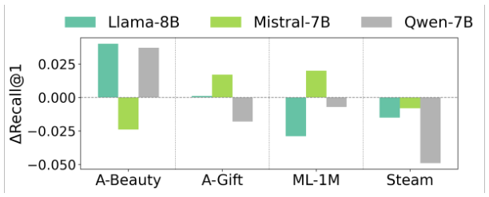
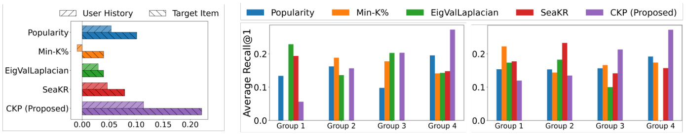
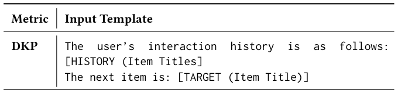
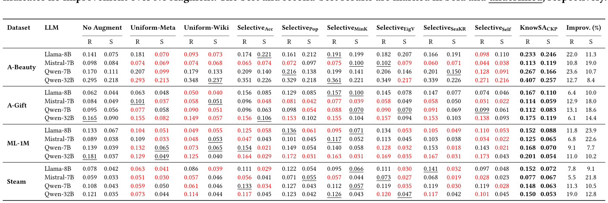
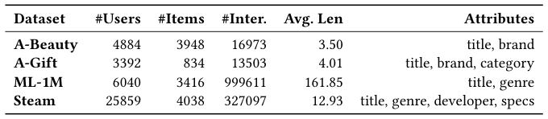
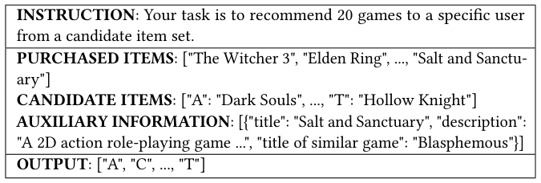
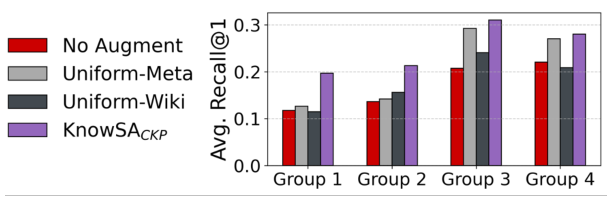
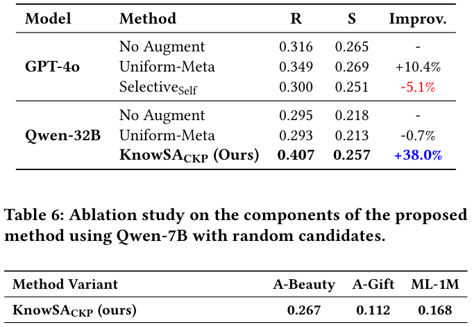

Filling the Gaps: Selective Knowledge Augmentation for LLM Recommenders (填补知识缺口：面向 LLM 推荐器的选择性知识增强)
- 会议/期刊: SIGIR 2026 (Full Papers Track)
- 推荐链路定位: 重排 (Re-ranking) —— LLM 作为 training-free ranker 对候选集排序
- 研究方向: 大语言模型推荐 (LLM4Rec) / 冷启动与长尾推荐
- 论文原文: https://arxiv.org/abs/2604.07825v2
- 开源代码: https://github.com/nowhyun/KnowSA （CKP 评分实现另见 KnowSA_CKP）
TL;DR (核心速览)
LLM 免训练推荐器存在"知识缺口"：预训练曝光不均导致对长尾物品的协同关系掌握不足。本文提出 KnowSA_CKP，用比较式知识探测 (CKP) 以"内容中立标识符 + 混合干扰项"的 top-1 选择似然量化 LLM 对每个物品的协同知识，再通过 APS（增强优先级）与 RMS（参考匹配）只对最需要的物品注入属性与参考物品标题。在 4 个数据集、5 个 LLM 上，20 候选随机负例设定下 Recall@1 相对提升最高达 23.6%（A-Beauty/Qwen-7B），且推理 token 与延迟低于全量增强。
Background & Motivation (背景与动机)
- 领域背景与主流范式: 两阶段推荐（候选生成 + 排序）中，LLM 作为 training-free ranker 直接对候选集排序，无需微调即可利用其开放世界语义与事实知识，是 LLM4Rec 的低成本主流路线。
- 现有方法局限 (Limitations of Prior Work):
- 模型级适配 (fine-tuning)：用交互数据微调 LLM 学习协同模式，计算开销大，且可能损害指令遵循与可解释性等通用能力。
- 提示级增强 (prompt-level augmentation)：现有方法几乎都是 uniform augmentation——对提示中所有物品无差别追加元数据/外部知识。这既浪费有限上下文预算，又因长上下文干扰反而降低排序质量（图 1 显示 4 个数据集中 3 个性能下降）。
- 通用自适应检索 (Adaptive RAG)：需在生成过程中顺序监测知识缺失，推理时开销大，且 LLM 难以在单个复杂提示中同时判别数十个物品的知识缺口。
- 核心挑战 (Key Challenge): 推荐所需的知识不是"物品是什么"的语义熟悉度，而是"用户历史与目标物品之间的协同关系（共消费模式）"。流行度、Min-K%、EigValLaplacian、SeaKR 等通用代理只测语义熟悉度，与 Recall@1 的 Spearman 相关性弱（图 2a），且无法在分位分组上呈现单调性（图 2b）。
- 核心洞察与切入点 (Key Insight): 作者通过 Pilot Study 发现：(i) 无差别增强有害；(ii) 现有知识代理与推荐性能错位。因此需要推荐定制、离线可算、排序导向的知识评分——把评分重构为"给定交互窗口，从含难负例的比较集中选出 top-1"的相对比较问题，并用内容中立标识符消除表面偏置。
Problem Formulation & Method (问题定义与方法架构)
1. 符号定义与输入表征 (Notations & Input Representations)
- 数据集 \(\mathcal{D}=(\mathcal{U},\mathcal{I},\mathcal{T},\mathcal{H})\)：用户集 \(\mathcal{U}\)、物品集 \(\mathcal{I}\)、物品属性文本集 \(\mathcal{T}\)、交互历史集 \(\mathcal{H}\)。
- 用户 \(u\) 的时序交互序列 \(H_u=(i_{u,1},\dots,i_{u,|H_u|})\)，实验截断至最近 50 条。
- 物品 \(i\) 的文本特征 \((t_i,a_i)\in\mathcal{T}\)：\(t_i\) 为标题，\(a_i\) 为附加属性（品牌、类目、开发者、描述等）。
- 两阶段：候选集 \(C_u=\{i_{u,1},\dots,i_{u,m}\}\)，\(m=20\ll|\mathcal{I}|\)；LLM 输出候选排序列表。
- 目标：估计每个物品的知识分 \(K(t)\)，并选择性注入信息，最小化上下文浪费。
2. 整体流水线 (Overall Architecture)
离线阶段：对每个物品构造交互上下文窗口 \(\mathcal{W}_t\) → 流行度分层采样得 \(\tilde{\mathcal{W}}_t\) → CKP 计算知识分 \(K(t)\) 并归一化为 \(k(t)\) → 预计算 APS 与 RMS 并存储。在线阶段：对 \(H_u\cup C_u\) 按 APS 选 top-\(K_{aug}\) 增强目标 → 为每个目标按 RMS 选 top-\(K_{ref}\) 参考物品 → 拼接属性与参考标题 → LLM 排序。
flowchart TD
A["离线: 交互历史 H 构造物品上下文窗口 W_t"] --> B["流行度分层采样 → 子集 W̃_t"]
B --> C["CKP: 比较集 C(t)=目标+随机干扰+语义干扰, 中立标识符 top-1 似然"]
C --> D["物品知识分 K(t) → 归一化 k(t)"]
D --> E["预计算 APS(i)=(1-k)·f·r 与 RMS(t,r)=k·s·c"]
E --> F["在线: 对 H_u ∪ C_u 按 APS 选 top-K_aug 增强目标"]
F --> G["按 RMS 选 top-K_ref 参考物品, 注入属性+参考标题"]
G --> H["LLM 免训练排序输出候选列表"]3. 核心模块设计与数学原理 (Key Designs & Formulations)
(1) 比较式知识探测 CKP（核心创新）
对物品 \(t\) 构造比较集 \(C(t)=\{t\}\cup C_{rand}(t)\cup C_{sem}(t)\)： - 随机干扰项 \(C_{rand}(t)\sim\text{UniformSample}(\mathcal{I}\setminus(\{t\}\cup w),\,n)\)，提供多样性、作为 easy case； - 语义干扰项 \(C_{sem}(t)=\text{Top-}m_{j\in\mathcal{I}\setminus(\{t\}\cup w)}\cos(e_t,e_j)\)，用 Sentence-BERT 文本嵌入选难负例，迫使模型只有在具备细粒度判别知识时才把概率集中到目标上。
关键设计：对 \(C(t)\) 随机打乱并赋予内容中立标识符（如 [A]、[B]），切断标题 token 组成的表面偏置；只要求模型输出单个 top-1 标识符而非完整排序，避免自回归全排序中"越靠后候选池越小、概率被虚高"的结构性缺陷。top-1 选择似然采用 list-wise 形式：
其中 \(z_i\) 为各标识符的输出 logit。物品级知识分为采样窗口上的平均：
对照基线 DKP 直接对标题做 token 级似然累加 \(P_{\text{LLM}}(t\mid P_w^{DKP})=\exp(\sum_{j=1}^{L}\log P(y_j\mid P_w^{DKP},y_{<j}))\)，易受词汇偏置与长度偏置影响。
(2) 增强优先级 APS（增强什么）
三项分别为知识亏缺、交互频次、时序新近度（\(\text{pos}(i)\) 为逆时序位置，最近为 0）。各分量取对数后 min-max 归一化。物理直觉：知识越缺、越重要、越近期的物品，缺知识对排序伤害越大。
(3) 参考匹配 RMS（用什么增强）
\(k(r)\) 为参考物品知识分（选 LLM 已充分理解的物品），\(s(t,r)\) 为文本嵌入余弦相似度，\(c(t,r)\) 为滑窗大小 2 的共现归一化频次。只注入参考物品标题（不注入其完整属性），以最小 token 激活 LLM 参数中已有知识。上下文感知变体：\(\text{RMS}_{ctx}=\text{RMS}(t,r)\cdot\cos(h_u,e_r)\)，复用 SASRec 的检索嵌入。
4. 训练目标、负采样与推理复杂度 (Optimization, Negative Sampling & Complexity)
- 损失函数: 本文为 training-free 框架，无梯度训练目标；所有"学习"均通过 LLM 的似然/选择概率完成。SASRec 仅作为候选生成器与上下文感知嵌入来源，按常规训练。
- 负采样策略: 知识评分阶段的比较集采用混合负采样——\(n\) 个 Uniform 随机负例（easy）+ \(m\) 个基于文本嵌入的语义难负例（hard negative），\(n,m\in\{0,1,2\}\) 调参；评测阶段候选集为 1 正 + 19 负，分 Random（均匀采样未见物品）与 SASRec（top-19 预测）两种。
- 时间与空间复杂度: 离线 CKP 全窗口计算昂贵，流行度分层采样（按窗口平均流行度分 3 个分位箱各均匀采样）将成本降低 1.9×–101.9×（表 7，ML-1M 仅采样 1% 窗口，61,362s → 602s，显存约 7.7–9.2GB）。在线阶段 APS/RMS 全部离线预计算，仅查表，无额外推理开销；相比 Uniform-Meta 反而减少输入 token 与延迟（表 8）。
Experimental Setup & Evaluation Protocol (实验设置与评估协议)
- 数据集统计与预处理: 4 个公开数据集，均过滤交互数 < 5 的用户与物品，并剔除缺失文本特征的物品；交互按时间排序成序列。
| 数据集 (Dataset) | 用户数 (#Users) | 物品数 (#Items) | 交互数 (#Interactions) | 平均序列长度 (Avg. Len) | 模态/辅助特征说明 |
|---|---|---|---|---|---|
| A-Beauty | 4,884 | 3,948 | 16,973 | 3.50 | title, brand |
| A-Gift | 3,392 | 834 | 13,503 | 4.01 | title, brand, category |
| ML-1M | 6,040 | 3,416 | 999,611 | 161.85 | title, genre |
| Steam | 25,859 | 4,038 | 327,097 | 12.93 | title, genre, developer, specs |
- 数据划分方式 (Splitting Strategy): Leave-One-Out (留一法)——每个用户序列最后一项为测试真值；每个数据集随机抽 1,500 用户测试，其余按 9:1 划分训练/验证用于 SASRec 训练、知识评分与超参调优。历史截断至最近 50 条。留一法本身存在"未来信息"风险较低，但需注意知识评分窗口来自训练/验证段，作者未显式讨论测试物品是否参与 CKP 窗口构造的泄露边界。
- 排名评测协议 (Ranking Protocol): Sampled Ranking——候选集 20 个（1 真值 + 19 负例），分 Random 与 SASRec 两种负例来源；非 Full-Ranking，这是本文评估协议的主要局限。
- 评价指标与显著性检验: 主指标
Recall@1；辅助指标LTC@10（长尾覆盖率，长尾定义为流行度后 80%）。LLM 覆盖 Llama-3.1-8B、Mistral-7B-v0.3、Qwen2.5-7B/32B、GPT-4o。原文未报告多随机种子方差与配对显著性检验（\(p\) 值）。
Key Experimental Results (核心实验结果)
1. 主实验对比 (Main Results)
表 2 覆盖 4 数据集 × 5 LLM × 2 候选来源。下表摘取代表性结果（R = Random 候选，S = SASRec 候选）：
| 数据集 | LLM / 指标 | No Augment (R/S) | 最强 Uniform (R/S) | 最强 Selective 基线 (R/S) | 本文 KnowSA_CKP (R/S) | 相对提升 (R/S) |
|---|---|---|---|---|---|---|
| A-Beauty | Qwen-7B / Recall@1 | 0.170 / 0.111 | 0.207 / 0.133 (Uniform-Meta) | 0.216 / 0.150 (Selective Acc) | 0.267 / 0.166 | +23.6% / +10.7% |
| A-Beauty | Qwen-32B / Recall@1 | 0.295 / 0.218 | 0.348 / 0.237 (Uniform-Wiki) | 0.361 / 0.226 (Selective Pop) | 0.407 / 0.257 | +12.7% / +8.4% |
| A-Gift | Qwen-7B / Recall@1 | 0.095 / 0.056 | 0.090 / 0.051 (Uniform-Wiki) | 0.099 / 0.070 (Selective Self) | 0.112 / 0.083 | +13.1% / +18.6% |
| ML-1M | Llama-8B / Recall@1 | 0.133 / 0.067 | 0.104 / 0.055 (Uniform-Wiki) | 0.136 / 0.071 (Selective Pop) | 0.152 / 0.088 | +11.8% / +23.9% |
| Steam | Qwen-32B / Recall@1 | 0.121 / 0.035 | 0.114 / 0.044 (Uniform-Wiki) | 0.126 / 0.043 (Selective Pop) | 0.150 / 0.053 | +19.0% / +12.8% |
关键观察：Uniform 增强在多数设定下不如 No Augment（表中红色标注），验证了"无差别增强有害"的动机；单视图启发式选择性增强跨数据集不稳定；KnowSA_CKP 在所有 4 数据集 × 5 LLM 上一致最优。
2. 消融实验与控制变量分析 (Ablation Study)
表 6（Qwen-7B，Random 候选）显示各模块移除后的 Recall@1 下降：
- CKP 相关：去掉相对比较（退化为 DKP）A-Beauty 0.267→0.214（−19.9%），去掉语义干扰项 →0.219；验证比较式探测与难负例设计均有效。
- APS 相关：去掉 APS（退化为带参考物品的均匀增强）A-Beauty 0.267→0.194、ML-1M 0.168→0.087（−48.2%），在长历史数据集 ML-1M 上下降最剧烈，说明长上下文中"优先增强"至关重要；去掉知识分 →0.213，去掉交互频次 →0.216，去掉新近度 →0.225。
- RMS 相关：去掉 RMS（仅文本属性）→0.223；仅用 Wikipedia 描述 →0.079（严重下降）；去掉知识分 →0.188；去掉语义相似度 →0.215；去掉共消费分 →0.169（降幅最大，说明行为协同信号最关键）；去掉 SASRec 上下文个性化 →0.233（该变体在 A-Gift 上 0.114 略高于完整版 0.112，说明上下文变体并非普适增益）。
贡献最大模块：APS（尤其长序列数据集）与 RMS 中的共消费分。消融未严格对齐参数量/上下文长度，属潜在控制变量缺口。
3. 稀疏度/冷启动分桶与超参敏感度 (Sparsity Buckets & Hyperparameters)
- 知识水平分桶：按用户历史物品平均 CKP 分四等分，图 3 显示 KnowSA_CKP 在所有组均最优，且在知识最贫乏的 Group 1–2 上相对 Uniform 的领先幅度最大，直接印证"选择性增强填补知识缺口"的机制。
- 长尾覆盖：图 4 显示选择性增强普遍优于均匀增强；KnowSA_CKP 的 LTC@10 略高于其他选择性基线，同时 Recall@1 显著更高，实现精度-多样性更优平衡。作者进一步检验"增强物品是否被人为抬高"：A-Beauty/Qwen-7B 上增强目标进入 Top-1 的次数从 393 降至 375，说明增强提供的是澄清性知识而非排名偏置。
- 前沿模型对照：表 5 显示 GPT-4o 用 self-asking 选择性增强反而比 No Augment 下降 5.1%，而 Qwen-32B + KnowSA_CKP 提升 38.0%，说明"在单提示内诊断多达 70 个物品的知识缺口"对强 LLM 仍是难题。
- 超参敏感度：\(K_{aug}\) 增大性能先升后饱和（约平均 10 为佳），过大超出有效上下文预算；\(K_{ref}\) 小值即足够，最优为 2（图 5，Steam/Qwen-7B）。\(\lambda\in\{0.7,0.4,0.1\}\)、\(n,m\in\{0,1,2\}\) 为调参范围。
- 线上 A/B 测试: 原文未报告，仅离线实验。
Highlights, Limitations & Critiques (亮点、局限与审稿级批判)
- 核心亮点与可迁移性:
- CKP 评分范式极具迁移性：把"知识估计"重构为"带难负例的相对 top-1 选择似然 + 内容中立标识符"，可迁移到任何需要估计 LLM 对实体掌握度的任务（如 RAG 触发、工具调用路由、冷启动物品描述生成）。
- 离线预计算 + 在线查表的工程范式，使选择性增强在推理时零额外开销甚至降低延迟，对工业 LLM 推荐落地友好。
- APS/RMS 的多因子设计（知识亏缺 × 频次 × 新近度；知识 × 语义 × 共消费）提供了可解释的增强优先级框架。
- 局限性与审稿视角批判 (Critical Limitations):
- 评估协议偏弱：仅 20 候选的 Sampled Ranking + Recall@1，未做 Full-Ranking，也未报告 NDCG@K、MRR 等排序质量指标；20 候选场景下 Recall@1 的区分度与工业真实候选规模（数百至数千）差距大，结论外推性存疑。
- 统计严谨性不足：未报告多随机种子方差、置信区间或配对显著性检验；表 2 中部分提升（如 A-Gift/Qwen-32B 仅 +6.1%）是否显著未知。
- 离线成本与可扩展性：CKP 需对每个物品的多个窗口做 LLM 前向，即便采样后 ML-1M 仍需 602s、Steam 927s；物品库达百万级时预计算成本与存储（每物品一个分数 + APS/RMS 表）需重新评估，论文未给出大规模物品库的扩展分析。
- 超参依赖与上下文变体不一致：\(K_{aug}\)、\(K_{ref}\)、\(\lambda\)、\(n\)、\(m\) 均需按数据集调参；上下文感知 RMS 变体在 A-Gift 上反而略降，说明个性化参考选择并非稳定增益，论文对此解释不足。
- 知识评分的时序泄露边界未澄清：CKP 窗口来自训练/验证段，测试物品的交互窗口是否与测试标签存在重叠未明确讨论。
- LLM 版本敏感性：Mistral-7B 上多个基线（含 Uniform）大幅劣于 No Augment，提示结论对基座模型指令遵循能力敏感，论文未深入分析原因。
Rating (四维评分)
- 方法创新性 (Novelty): ⭐⭐⭐⭐ （CKP 的"相对比较 + 中立标识符 + 难负例"设计巧妙且切中推荐任务本质，但整体仍是提示工程层面的组合创新）
- 评估协议与实验扎实度 (Protocol & Experiments): ⭐⭐⭐ （4 数据集 × 5 LLM 覆盖广、消融充分，但仅 20 候选 Sampled Ranking、缺显著性检验与 Full-Ranking）
- 写作与数学规范度 (Clarity & Rigor): ⭐⭐⭐⭐ （动机分析（图 1、图 2）与三 desiderata 推导清晰，公式规范；部分符号与实现细节（如 \(\phi\) 的具体形式、窗口构造）可更完整）
- 工业落地与复现价值 (Industrial & Practical Value): ⭐⭐⭐⭐ （training-free、离线预计算、在线降延迟，代码开源，落地门槛低；但大规模物品库的预计算成本是主要障碍）
论文图表







